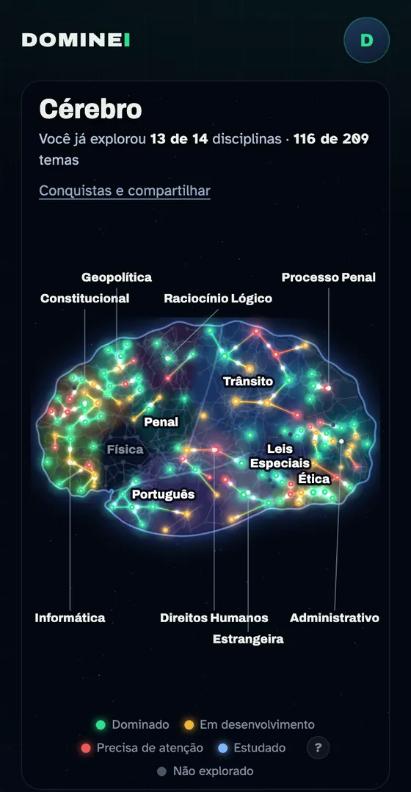
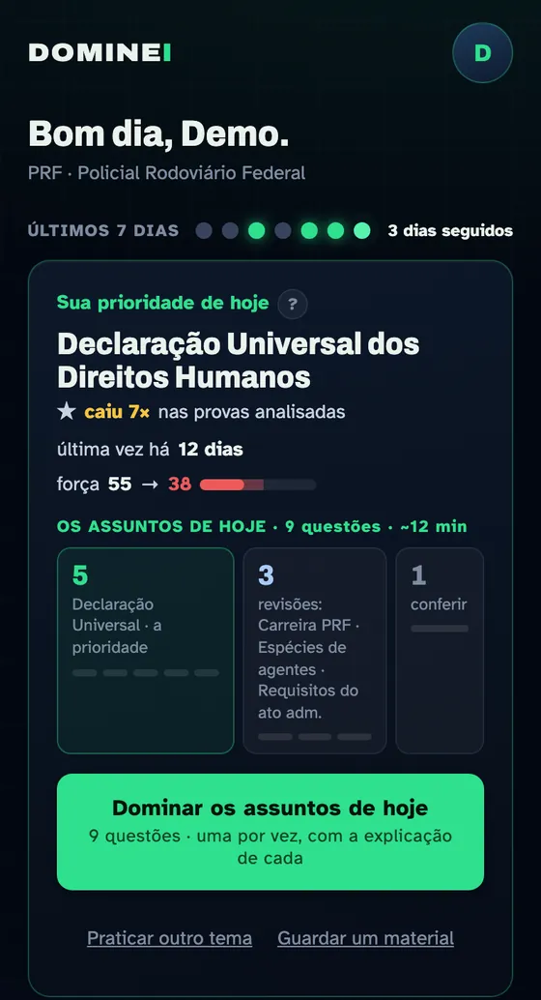
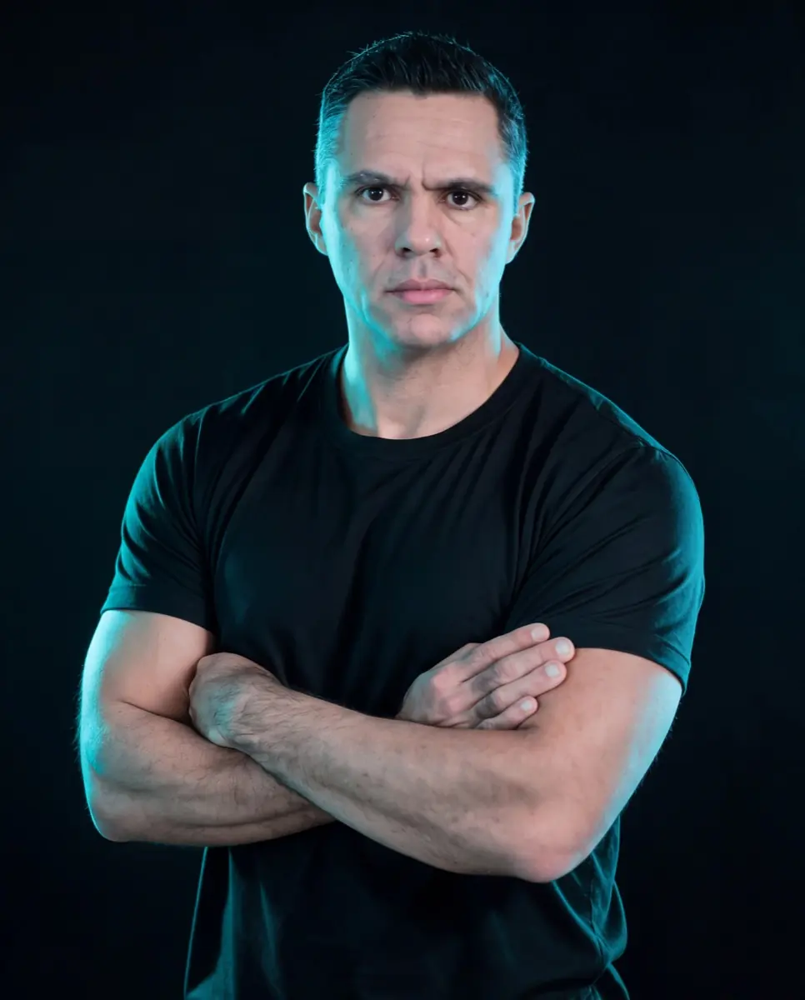

O que você já domina
Você termina um assunto e não sabe se ele ficou ou se vai sumir até a prova.
Uma plataforma que mostra o que você já domina do seu edital, o que estudar hoje e o que revisar. Faça o cadastro e use o Cérebro de graça até a live de 10 de novembro.No dia 10 de novembro, ao vivo, o Professor Fábio abre o Cérebro e mostra como estudar com ele.
Cadastro gratuito no fim da página · Com Fábio Silva · Sou Concurseiro
A velha forma de estudar
Você termina um assunto e não sabe se ele ficou ou se vai sumir até a prova.
O edital tem centenas de temas e todos parecem urgentes. Sem saber o peso de cada um, o tempo vai para o lugar errado.
Revisar tudo é impossível. Não revisar é esquecer. Falta alguém dizendo o que voltar a ver hoje.
Antes era quase impossível enxergar isso sozinho. Agora, com inteligência artificial, dá. Essa é a Revolução do Estudo.
O Cérebro por dentro
O nome oficial da plataforma é Dominei. A gente chama de Cérebro porque é isso que ela monta: o mapa da sua cabeça para o seu edital.
O Cérebro é montado para a prova que você vai fazer: PRF, TJ-AM, Polícia Federal, Polícia Civil e Polícia Militar do Amazonas, INSS, ManausPrev, SES-AM, SEDUC-AM, SEDUC-PA e SEMED Manaus.
Um teste de até 20 questões do seu edital. Cada assunto vira um ponto: verde é o que você domina, amarelo está em desenvolvimento, vermelho precisa de atenção.

Todo dia ele mostra a sua prioridade: o assunto que mais pesa na prova cruzado com o que falta em você, mais as revisões na hora certa. Um botão e você começa.

Resumo, foto das anotações, mapa mental, PDF: tudo fica no Meu Material, organizado por disciplina e assunto do edital, e aceso no seu cérebro.
Veja funcionando
Como você entra
WhatsApp, e-mail e escolaridade, no fim desta página.
A página seguinte leva você ao grupo do WhatsApp da Revolução. É por lá que saem os avisos e o link da live.
No seu WhatsApp chega o link pessoal para criar a sua conta no Cérebro. Use de graça até terça, 10/11, às 8h de Manaus.
Terça, 10 de novembro, às 20h de Brasília (19h de Manaus), no YouTube. O Professor Fábio abre o Cérebro ao vivo e revela a condição de Black Friday.
Antes de se cadastrar

Quem está com você
Fábio Silva prepara alunos para concursos de polícia, tribunais, saúde e educação. Viu muita gente boa estudar no escuro e desistir sem saber se estava perto ou longe da aprovação.
O Cérebro é a resposta que ele construiu para isso: uma forma de estudar em que você enxerga, todo dia, o que já domina e o que falta para a sua prova.
Seu cadastro
Gratuito. O acesso ao Cérebro chega no seu WhatsApp e vale até terça, 10/11, às 8h de Manaus.Gratuito. O link da live sai no grupo do WhatsApp.
Dúvidas
Sim. O cadastro é gratuito e o Cérebro fica liberado para você até terça, 10 de novembro, às 8h de Manaus. Não pedimos cartão.O cadastro é gratuito. O acesso grátis ao Cérebro desta semana já foi encerrado; na live o Professor Fábio mostra como continuar.
Não. O Cérebro abre no navegador do celular ou do computador. Você cria a sua conta pelo link pessoal que chega no seu WhatsApp.
Hoje são 20 editais: PRF, Polícia Federal (agente e administrativo), Polícia Civil e Polícia Militar do Amazonas, TJ-AM, INSS, ManausPrev, SES-AM, SEDUC-AM, SEDUC-PA e SEMED Manaus. Se o seu não estiver na lista, você pode pedir o seu dentro do Cérebro.
Não. Esta semana é para você que ainda não é aluno conhecer a nova forma de estudar.
Às 8h de Manaus o acesso grátis termina e o seu progresso fica guardado. Às 20h de Brasília (19h de Manaus), ao vivo no YouTube, o Professor Fábio mostra como continuar estudando com o Cérebro e revela a condição de Black Friday.
Sim. Na live será apresentada uma oferta do Sou Concurseiro. A participação é gratuita e a compra é opcional.